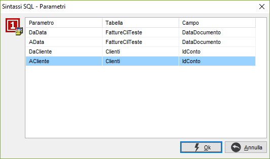

La finestra consente di definire i parametri variabili eventualmente presenti nella statistica.

Per ogni parametro è necessario specificare la tabella ed il campo che dovranno essere confrontati con il parametro richiesto.